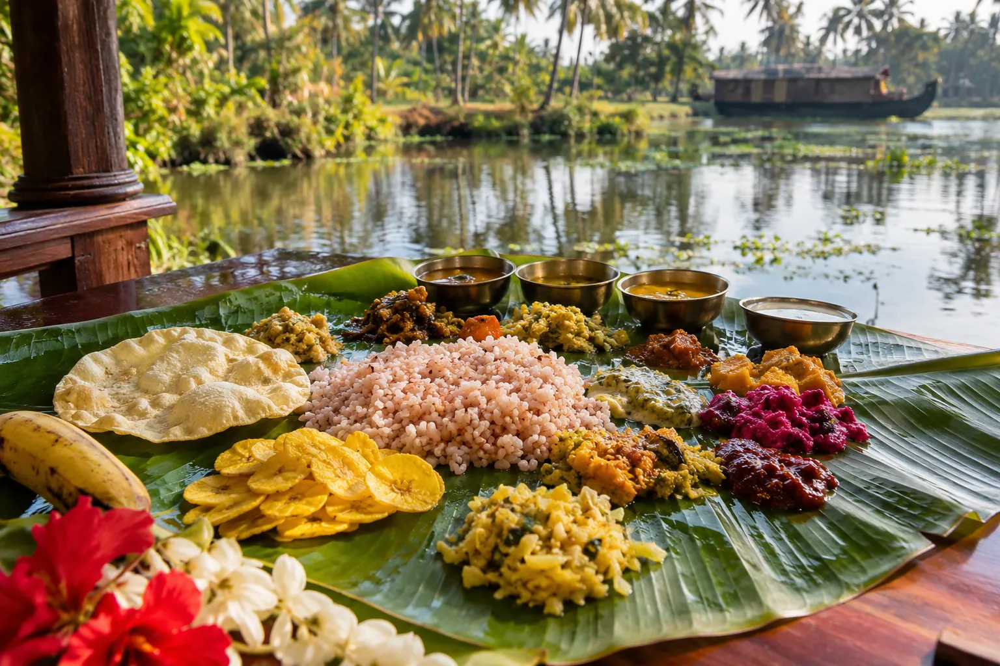

An Alleppey homestay with food included means eating the way Alappuzha families have for generations: fish bought from a boat that morning, coconut pressed the same day. It's what our homestay in Alleppey offers.
Three meals, one kitchen
The meals included at a Kerala homestay are usually breakfast and dinner, and ours follow that pattern.
Served 7:30 to 9:30 am, timed around your day's plans.
Not always included, as guests are often out on the backwaters, at markets or temples. Tell us in advance and we'll arrange it.
Around 7:30 pm, and flexible if you return late from an evening houseboat cruise in Alleppey or a village visit.
Mornings that start with rice and coconut
A Kerala breakfast is light and fresh, built around rice, coconut and whatever is in season.

Appam with stew
Lacy fermented rice hoppers with a coconut milk vegetable or chicken stew, crisp at the edges and pillowy at the centre.
Puttu and kadala curry
Steamed rice cylinders with a dense black chickpea curry. Earthy and filling.
Idiyappam with coconut milk
Soft, delicate pressed rice noodles with sweetened fresh coconut milk.
Banana and fresh fruit
Kerala's nendran banana is ripened on the tree and tastes richer than any imported one.
Tell us the evening before if you have a breakfast favourite. We cook to order, not from a buffet tray, and will always try to make it.
Dinner by lamplight
Dinner is home-cooked Kerala food, made the way local families make it and not the milder version many restaurants serve visitors.
- Kerala fish curry in a clay pot with raw mango and coconut oil, from a recipe this household has used for three generations
- Prawn roast or karimeen (pearl spot) fry when in season, fresh from local fishermen
- Thoran, a dry stir-fry of seasonal vegetables with fresh coconut
- Dal and rice, cooked in coconut oil for flavour
- Papadam, pickle and rasam to finish the meal
With advance notice we prepare a simplified sadya, the banana-leaf feast of up to a dozen small dishes served at festivals and weddings, here in a family home.
A table for everyone
Vegetarian and other dietary needs are easy here. Kerala cuisine is generous to vegetarians, and many favourite dishes contain no meat or fish.
- Tell us about vegetarian or vegan guests when you book and we'll plan the menu
- Most standard preferences are fine with a little notice
- We can't accommodate highly specialised clinical dietary requirements
Why we eat at home
Homestay food beats eating out in Alleppey for a simple reason: restaurants range from excellent to mediocre, and a menu won't tell you which.
No guesswork
Ingredients come from local sellers, so you skip the restaurant lottery.
Cooked with care
Made by someone who cares about the meal and knows how each dish should taste.
Easier budget
Two meals a day come off the variable cost list, so daily spending is easy to predict.
Plan your trip: explore our houseboats in Alleppey and family homestay, or read more on: